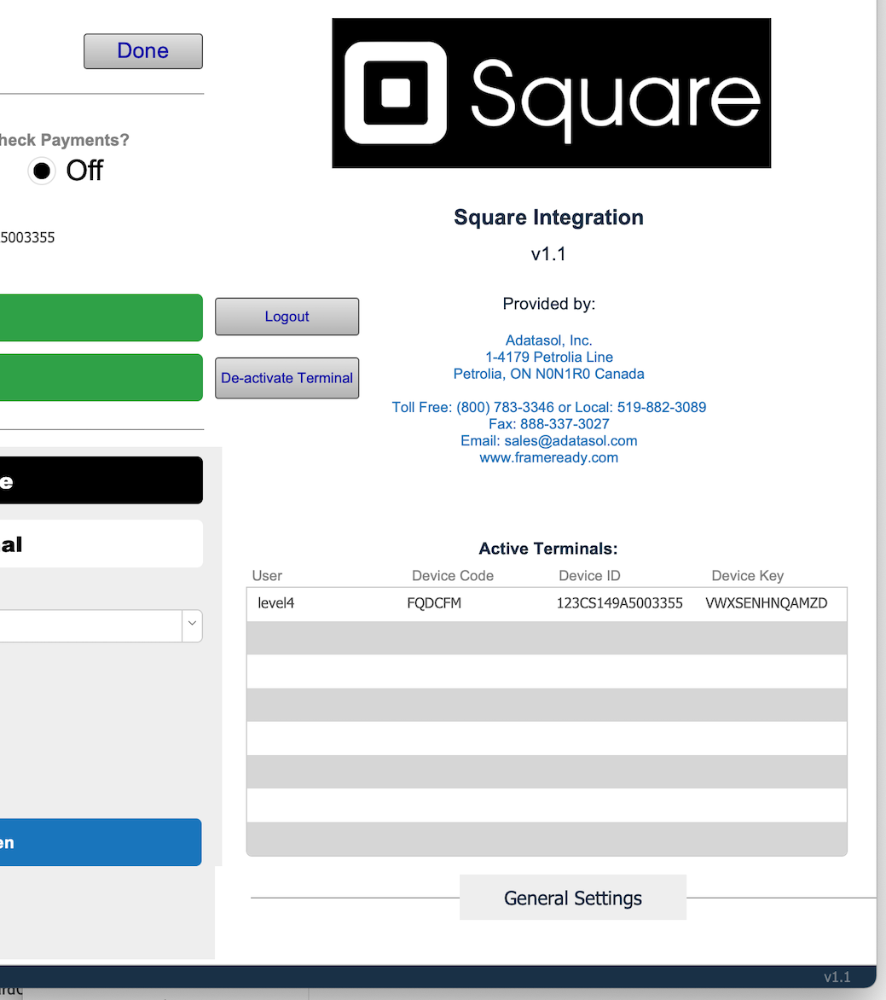
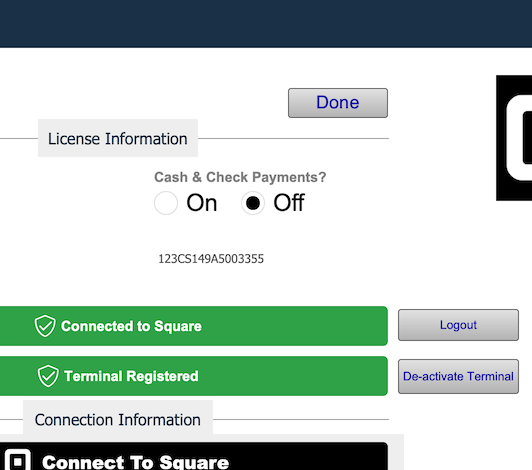
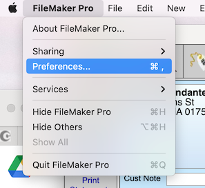
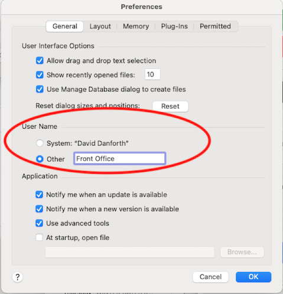
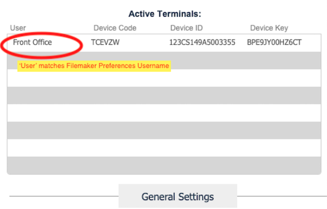
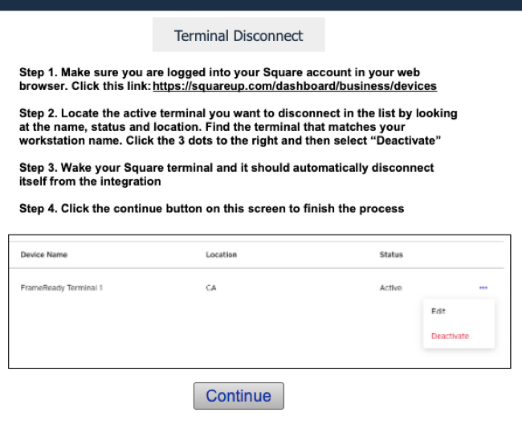
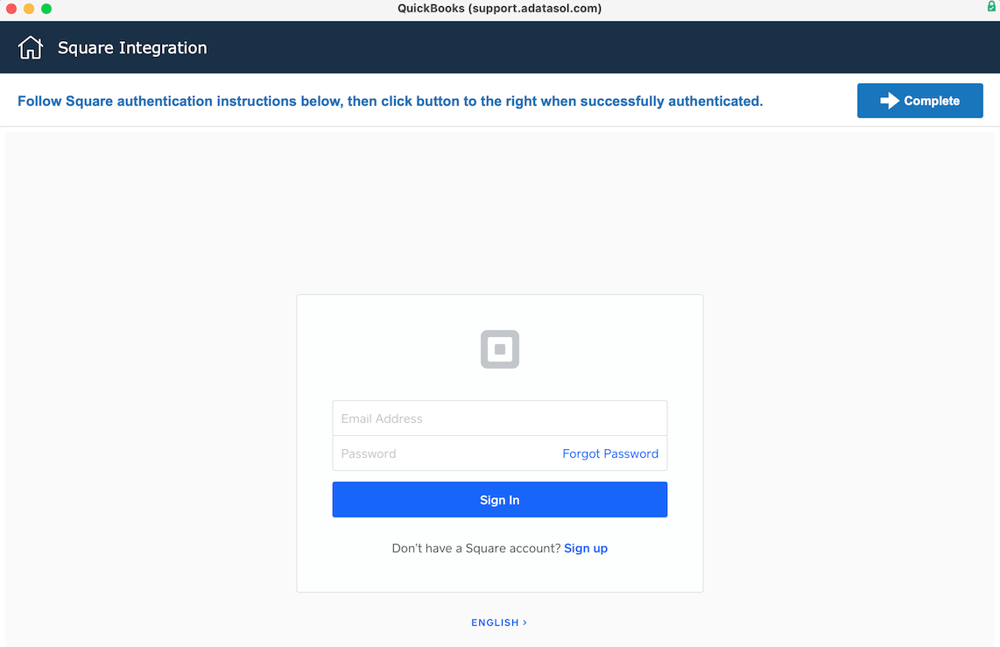
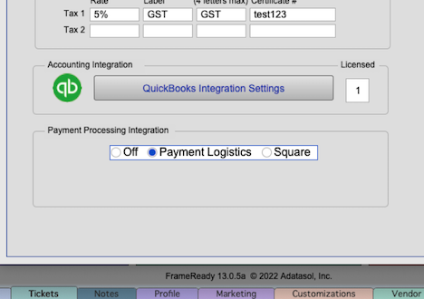

Square Integration FAQs
Frequently Asked Questions
Can you have multiple terminals connected to FrameReady?
-
Yes, you can have multiple terminals connected to your FrameReady integration, but each terminal must be binded to a Workstation (Computer / iPad)
-
For example, if your company has three computers in the office as well as one iPad, then you could have up to four terminals connected to your FrameReady -- one per device. The portal in the Square Settings screen in Set Up Data will show you all your current terminals that are connected.
-

Can one terminal be used at multiple different workstations around the office?
-
No, you cannot take a terminal and use it at different workstations (Computers / iPads) around the office.
-
Each terminal must be binded to a particular workstation.
-
If you wish to move that terminal to a new workstation and bind it to a new workstation, then you must first click the De-Activate Terminal button in the Square Integration Settings, and follow the instructions to De-Activate the terminal first before moving it to a new workstation. Once at the new workstation, you will need to go through the Register Terminal process again by logging into FrameReady at the new workstation, going into the Square Integration Settings and clicking the “Register Terminal” button. Then you can follow the instructions from there and the process will bind the terminal to the new workstation.
Can I take Cash or Check payments in FrameReady and have those logged into my Square?
-
Yes, you can take Cash or Check payments and have those payments logged directly into your Square payments so they show up in Square.
-
There is a radio button preference on the Square Integrations Settings to enable/disable Cash and Check Payments.

How does a terminal become binded to a specific Workstation (Computer / iPad)?
-
Each Square terminal is bonded to a specific Workstation using the Filemaker Preferences “User Name” field - This is located in Filemaker under the “FileMaker Pro” top menu to the left of the File menu on Mac. When you click the FileMaker Pro menu, you will then click on the “Preferences” option to open up the FileMaker Pro Preferences pop up window. In the middle of this window you will see a section for Username.


-
In order to make sure the User Name in the Filemaker Preferences is binded correctly to the Square terminal, you can look in the Active Terminals portal on the Square settings page. You should see a record in the Active Terminals portal with the Filemaker Preferences User Name under the User field that matches. If there is no record in the Active Terminals portal that matches the Filemaker User Name, then the current workstation you are looking at does not have a terminal correctly binded to it.

I de-activated my terminal by pressing the “De-Activate Terminal” button in the Square settings screen and the terminal has not logged itself out? Is the terminal de-activated?
-
No, the terminal will not de-activate just by pressing the button.
-
When you press the De-Activate terminal button, a new pop up screen gives you step-by-step instructions on how to de-activate the terminal (which must be done inside of your Square web admin center in a web browser).

-
Once you have clicked Deactivate in the web browser on the terminal, you will need to press the screen of your terminal with your finger one time. This will wake the terminal and the terminal should display a screen that says “Your session has been disconnected / expired” - The terminal has been correctly disconnected from your FrameReady at this point and is ready to be re-connected to any other workstation.
I am trying to “Register a Terminal” and FrameReady is telling me I cannot because I don’t have any active locations for my Square account.
-
If you are receiving this message in FrameReady when trying to Register a Terminal:
"There were no locations found on your Square account that are Active and have Credit Card Processing abilities. Please make sure you have fully activated your Square account with Identity Verification and your locations are set to the status of Active."
This means that you have either not added a location to your Square account or you have not fully been through all of the steps in the Square web admin center to verify your identity to allow Credit Card processing access for the particular locations you have added. Make sure you follow all the steps for adding a location and verifying your identity and try again. If you continue to see the error message then please contact Square support and ask them to help walk you through verifying your identity and activating credit card processing access for your locations that you have added in your Square web admin area at http://squareup.com.
I am trying to refund a payment from Square and its telling me that the payment amount exceeds the amount available to refund.
-
If you are attempting to refund a payment in FrameReady taken with Square and you are getting this message:
"The requested refund amount exceeds the amount available to refund."
-
This means that the dollar value in the payment Amount field is greater than the original payment amount that is tied to the Square reference number on the payment. Make sure that you have not changed the payment amount in the Amount field. Check the Reference Number of the payment and look for its matching payment in Square to see what the original payment amount was and make sure that those amounts match before trying to refund again.
I am trying to “Connect to Square” on the Square settings screen by clicking on the button and it loads the pop up window but its just a blank white screen. I am not seeing the username / password screen to enter my credentials to login to my Square account.
-
If you are clicking the “Connect to Square” button and just seeing a white screen and not seeing the screen below:

-
The reason you are just seeing a white screen (instead of seeing the username / password to login) is because you have an outdated version of FileMaker Pro that does not support the current web viewer technology. Please update your FileMaker Pro client software to version 19.4 or higher. Once you update your FileMaker Pro client software, you should be able to see the username/password screen on this pop up window and continue with the login process for Square.
I was signed up for Square and using the Square integration and then I upgraded my FrameReady with a FrameReady White Glove upgrade service. Now, when I go to use my Square payment processing integration, nothing is happening.
-
If nothing is happening when attempting to use your Square payment processing integration after your White Glove Upgrade make sure you check the bottom of the Fiscal tab in the Setup Data pop up window in FrameReady. There was a new radio button set added in FrameReady to select which Payment Processing service you are using in FrameReady recently. You will need to select the Square radio button on this screen and that will activate the Square integration in FrameReady. You will also want to check the Square settings page in FrameReady integrations file to make sure that all of your data is still in there and that your Square account is still connected and your Square terminal is still registered.

© 2023 Adatasol, Inc.